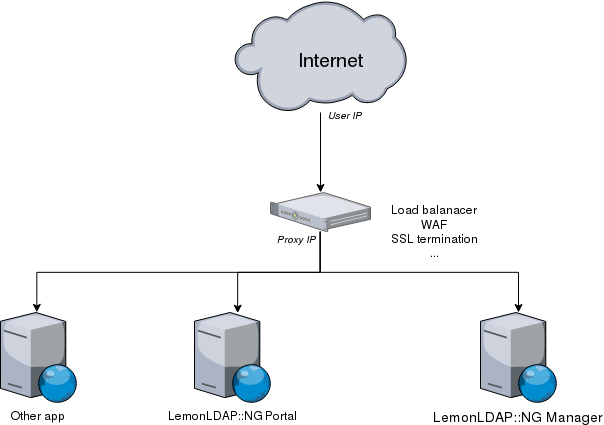

Your network infrastructure might require that LemonLDAP::NG components (Portal, Manager, Handler) run behind a reverse proxy.

In this case, LemonLDAP::NG components will store the ip address of the connection between the reverse proxy and the webserver in the session, and in logs. This prevents features such as session restrictions and rules based on `ipAddr` from working as expected.
A Content Delivery Network (CDN) would also have the same issue.
In order to make LemonLDAP::NG behave correctly behind a proxy, you need to forward the original IP address all the way to LemonLDAP::NG.
In order to do this you have several options.
This generic method is the most likely to work in your particular environment.
First, configure your reverse proxy (or CDN) to send the origin IP address in a HTTP header. Most reverse proxies do this by default, generally in a header named X-Forwarded-For or X-Real-IP.
Once the header is transmitted to LemonLDAP::NG's web server, you may uncomment the relevant parts of the configuration file.
set_real_ip_from 127.0.0.1;
real_ip_header X-Forwarded-For;
RemoteIPHeader X-Forwarded-For
RemoteIPInternalProxy 127.0.0.1
http_real_ip or mod_remoteip module might let an attacker impersonate any IP address they want by setting the X-Forwarded-For header themselves. Please read the relevant module documentation carefully.
Alternatively, if your proxy supports the PROXY protocol (Nginx, HAProxy, Amazon ELB), you may use it to carry over the information almost transparently.
Refer to your reverse proxy's documentation to find out how to enable the PROXY protocol on the reverse proxy side.
Then, on the LemonLDAP::NG side, in the NGINX configuration of your Portal/Manager/Handler:
listen 80 proxy_protocol; # or # listen 443 ssl proxy_protocol;